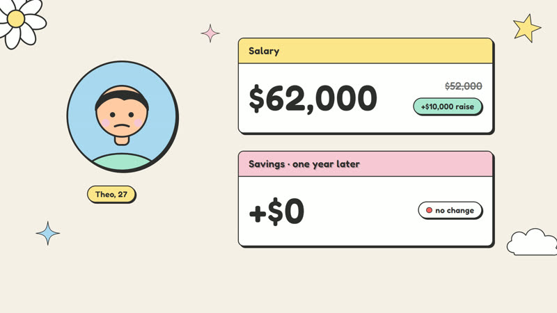
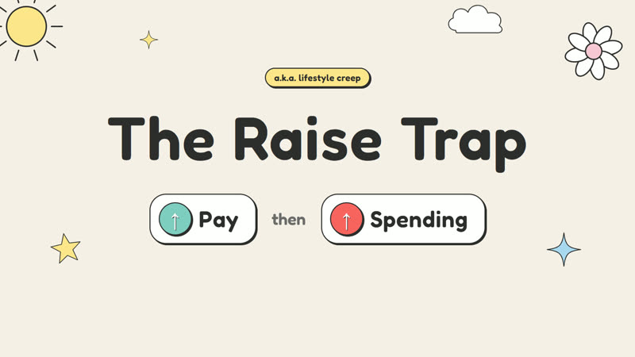
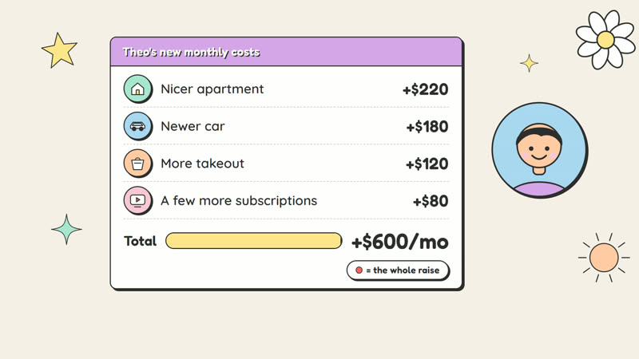
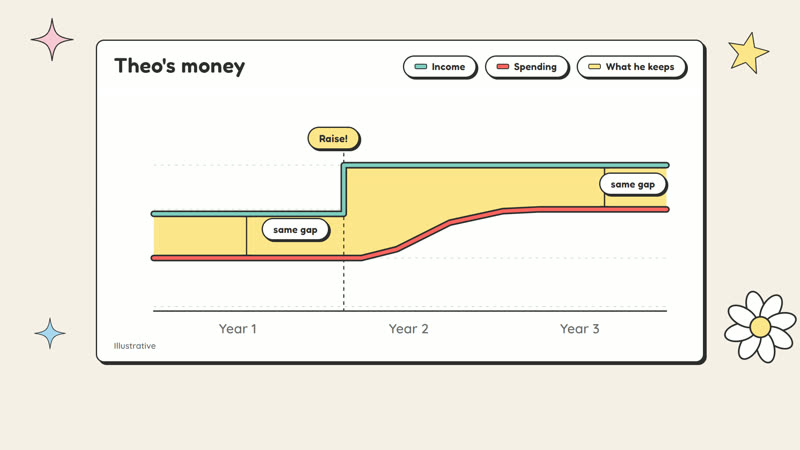
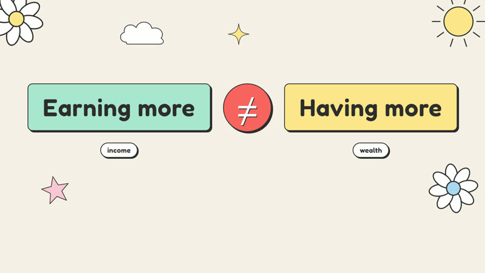
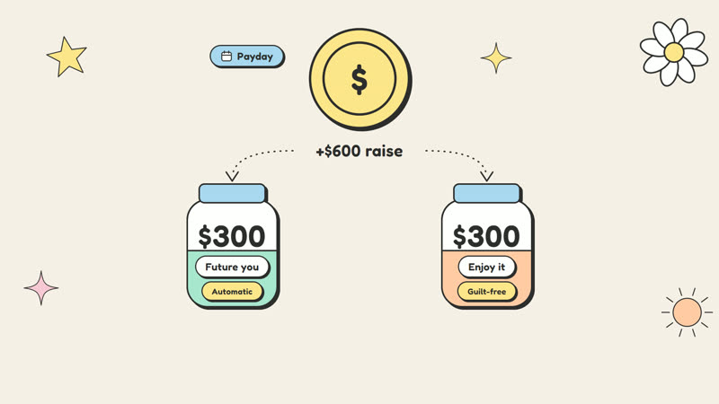
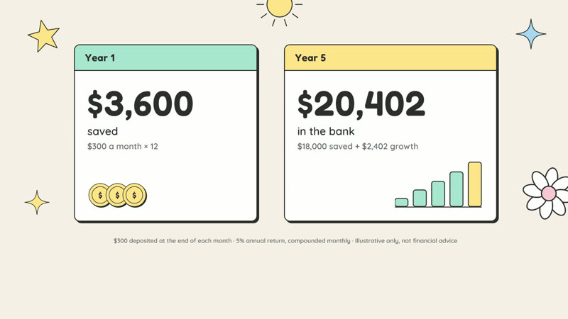
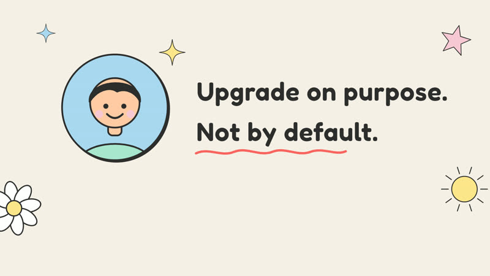
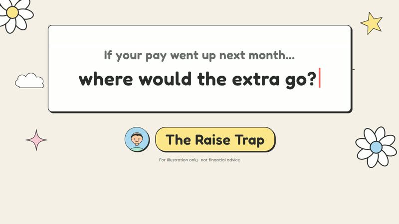

A warm, character-led explainer that makes one money idea stick: a raise only makes you richer if your spending doesn't rise with it.
Lifestyle inflation is invisible: no single upgrade feels like the problem. The video had to make that slow creep visible in a minute, without lecturing.









Figures are illustrative and not financial advice.